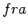

Introducción
Técnicas Difusas
Conjuntos Difusos
Alfa-cortes
Principio de Extensión
Variables Lingüísticas
Números Difusos
Aritmética Difusa
Lógica difusa y razonamiento aproximado
Sistemas de Computación con Palabras
Definiciones
Interpretación Lingüística
Razonamiento Aproximado
Algunas 
Construcción de una
Aproximación Lingüística
Valor Representativo
Ejemplo 1
Ejemplo 2
Oscar Duarte 2005-10-17